레인저 계열 통짜 시트
스펙 docs/specs/legacy-class-sheets.md · 레인저 · 저격수 · 마궁수 · 석궁사수 · 신궁 · 차원궁사 · 공성포수 · 2026-10-15
SHEET_ON 은 꺼 둠 — 켤지 사용자 결정. 결과는 0절. 아래 목록은 준비 단계 기록이다.
- 2차 포함 7종 기준 그림: 지금 게임의 대기 자세를 8배로 찍어 1배 도트로 줄였다. 칸 96(공성포수 128), 발 기준점 고정, 화살·석궁 살은 빼고 찍었다.
SHEET_ON에 7종 줄을 넣었다 (모두false— 시트가 승인되면 켠다). 주소?sheets=0이면 전부 꺼진다.- 동작 키 매핑: 하늘로 겨눈 스킬 자세(
bowA ≤ -0.55)는castUp줄로 가게 공용sheetFrame에 한 줄 더했다 (줄이 없으면 예전대로cast). - 96/128 칸 시트 쓰기
dev/bowsheets/sheet.py(칸 가장자리 닿음 검사·hand/head 점 자동) — 임시 시트로 게임 연결을 시험할 때 쓴다 (placeholder.py, 커밋 안 함).
D. 관절 애니 1단계 — 저격수 쏘기·걷기 (2026-10-17, PixelLab skeleton-v3 2회 · usage 6 · 계열 누적 22)
- 준비 (0회)
- 정리본에서 활·시위를 지웠다(5×5 창 가는 선 지우기). 96칸 발 (48, 88)에 놓고 2배로 키워 192칸 첫 프레임을 만들었다.
- 첫 프레임 관절은 그림에서 읽었다. 이 그림은 다리가 길고 몸통이 짧다(몸통 24 · 허벅지 19 · 정강이 20 · 위팔 8 · 아래팔 9). 그래서 같은 동작 설계를 이 뼈 길이로 다시 계산했다(
dev/bowsheets/skelgen.py).
- 무기 처리 3가지 비교:
- own: 모델이 그린 활 그대로
- ovl: 설계 관절 좌표에 원래 장궁(1.3배)을 덧그림 — 손이 실제 그림과 달라 활이 가슴에 겹쳤다
- ovl2: 그 프레임에서 지워진 활 선의 위치·각도에 덧그림 — 가장 낫다
- 검수 (qa.py --kind char --frames 8 + critic.md 비평):
- 쏘기 미달 — 움직임 2점: 시위 당기는 손이 턱 앞에서 멈추고 팔꿈치가 어깨 높이에 머문다. 놓을 때 튕기지 않고 팔만 벌어진다. 다리를 벌리고 몸을 기울이는 움직임과, 몸이 활과 같이 움직이는 것은 있다(무기만 도는 문제 없음).
- 걷기는 쓸 만하다 — 움직임 3점: 다리가 엇갈린다. 들썩임이 작고, 엉덩이 옆 밝은 조각은 스크립트로 지울 판정(fix)이다.
- 원인: 모델은 관절을 따랐다. 내 설계가 모자랐다. 뼈 길이를 그림에 맞춰 팔을 줄였더니(위팔 8.1·아래팔 9), 원래 각도로는 손이 목 높이(목 대비 +2, −5)에만 닿았다. 귀는 (−3, −11)이다.
- 수정안 (막대 인형 v2, 아래):
- 버팀 프레임: 팔꿈치를 거의 위(−100°)로, 아래팔을 귀 쪽(−62°)으로 해서 손을 귀 높이(−2, −8)에 둔다.
- 놓음: 손이 머리 뒤(−19)로 튕긴다.
- 몸 젖힘을 −9° 에서 −14° 로 키운다.
- 하늘 쏘기도 같은 식으로 고쳤다. 저격수 쏘기만 다시 뽑는 데 usage 3 이 든다(로드맵 승인 필요).
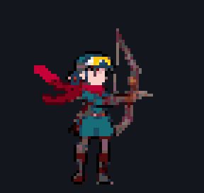
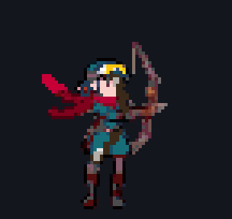
- 비평: 3~5프레임에서 당기는 손이 여전히 턱·가슴 앞이고, 팔꿈치는 어깨 높이다. 놓을 때 튕기지 않는다. 1프레임부터 이미 조준 자세다. 다리 내딛기만 조금 나아졌다.
- 원인 다시 보기: v1·v2 는 당기는 손 관절 좌표가 크게 달랐다(목 높이 → 귀 높이). 그런데 결과의 팔은 두 번 다 같은 자리였다 → 모델이 팔 관절을 따르지 않았다. 다리(걷기)는 따랐다. 첫 프레임 그림이 이미 활을 겨눈 자세라서, 모델이 그 팔 모양을 지킨 것으로 본다. 검사 계열 성기사가 성공했을 때 첫 프레임은 중립 대기 자세였다.
- 수정안: 첫 프레임을 중립 대기(팔을 내린 채 빈손, 활 없음)로 바꾼다. 정리본에 PixelLab
edit-image-pixen"팔을 내린 편한 대기, 빈손"을 1회(usage 1) 쓰고 → 같은 그림체인지 검수한다 → 그 그림을 첫 프레임으로 쏘기를 다시 뽑는다(usage 3). 합계 4. 관절은 이제 손 목표 역산으로 4종 모두 당기는 손이 귀 옆에 온다(skelgen.pysolve_hands— 로드맵 지시).
1단계 결과 (위: 쏘기, 아래: 걷기 — 3배)
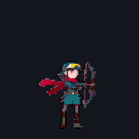
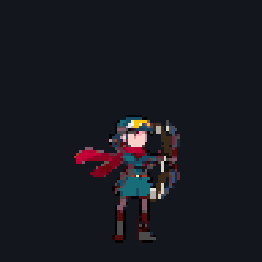
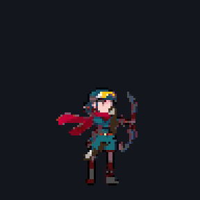
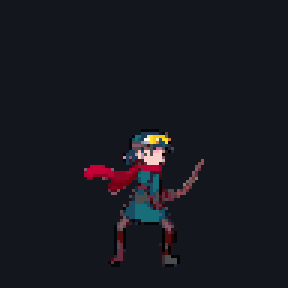
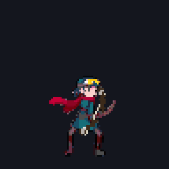
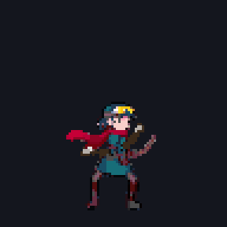
검수 시트 (쏘기 ovl2 · 걷기 ovl2)
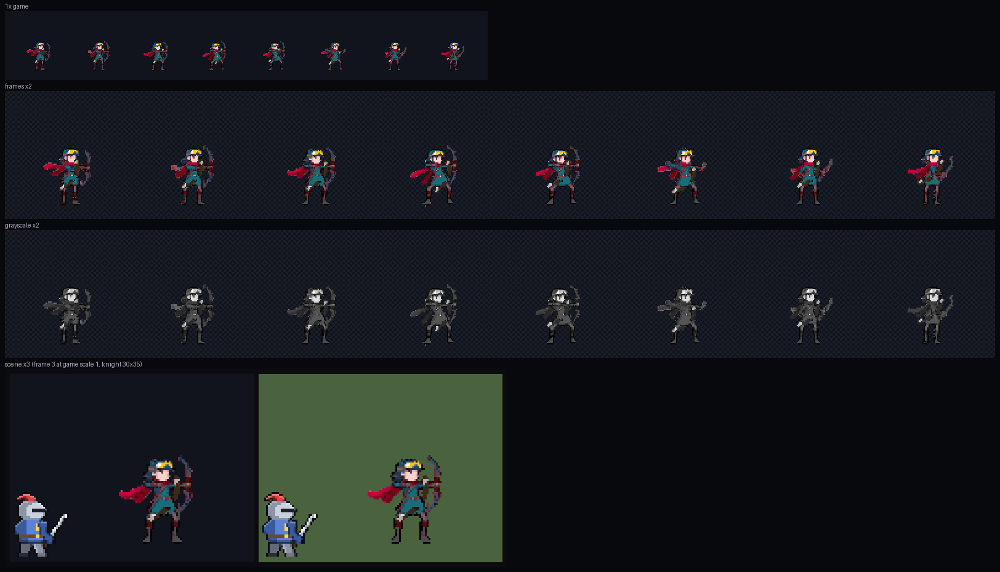
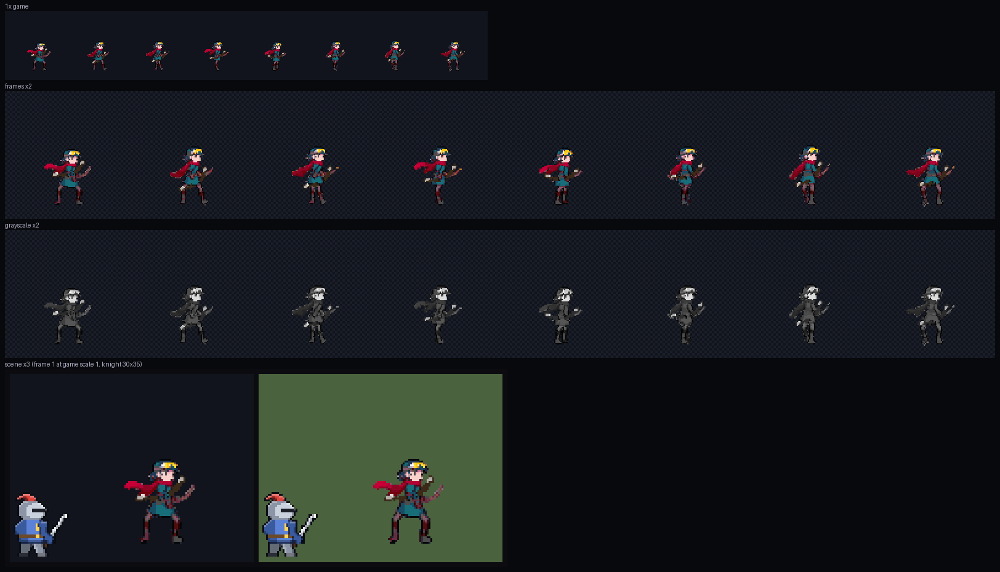
수정안 v2 막대 인형 (맨 왼쪽 = 첫 프레임 그림 위에 읽은 관절)
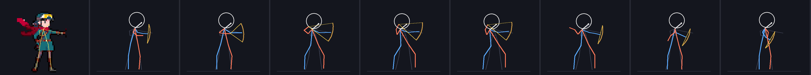
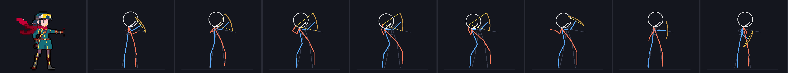
C. 기준 그림 정리 — PixelLab image-to-pixelart + 검수 합격 (2026-10-17, PixelLab 4 · 계열 누적 16)
- 석궁사수 얼굴: B5-37 얼굴이 회색·붉은 눈이라 해골처럼 보인다는 지적을 받았다. 그래서 "면갑을 올린 투구 아래 밝은 피부의 젊은 사람 얼굴, 붉은 눈·해골·가면 아님"으로 4장을 다시 뽑았다(B5f, ComfyUI). 검수 결과 73번이 유일하게 46px 에서 사람 얼굴로 읽혔다. 왼쪽을 봐서 좌우로 뒤집었다(스크립트).
- 정리 (로드맵 미리 승인, 직업당 1회, 재시도 0):
- ComfyUI 원본에서 바탕·발밑 그림자를 떼고, 몸 키를 256칸 판의 184(= 출력 46)로 맞춘다(
dev/bowsheets/board.py). - PixelLab
image-to-pixelart256 → 64 로 정리한다(usage 각 1, 4종 = 4).
- ComfyUI 원본에서 바탕·발밑 그림자를 떼고, 몸 키를 256칸 판의 184(= 출력 46)로 맞춘다(
- 손질 비교: 정리본(clean = 공용
polish.unbg, 바탕만 뗌)과 손질본(polish = 공용 14색·외톨이 점·외곽선·위 하이라이트)을 둘 다 검수했다. 손질본은 4종 모두 남색·초록·피부가 검정으로 무너져 점수가 낮았다. 그래서 정리본을 채택한다(공용 메모 "손질이 점수를 늘 올리지 않는다"와 같다). - 무료 수리 (검수 판정 fix, 스크립트만 —
dev/bowsheets/ref_qa.py):- 저격수: 바탕 떼기 잔여 흰 점을 지우고, 외곽선은 둔 채 안쪽 명도를 올렸다(명암 2 → 3).
- 석궁사수: 흰 잔여 점을 지웠다.
- 검수: 정식
dev/pixel-qa/qa.py --kind char와 보정된critic.md비평(general-purpose)으로 했다. 4종 합격: 레인저 3.86 · 저격수 3.71 · 마궁수 3.71 · 석궁사수 3.86. - 남은 지적 (합격, 선택 수리):
- 레인저: 활 든 팔이 몸 뒤쪽을 향한다. 동작은 관절 애니가 새로 잡는다.
- 저격수: 노랑이 고글뿐이다.
- 마궁수: 하반신 남색이 뭉친다.
- 석궁사수: 주황이 빠졌고 붉은 몸통이 어둡다.
검사 계열 기준 그림(맨 앞 검사·성기사)과 나란히 — 컬러 · 흑백 · 실루엣 (4배)
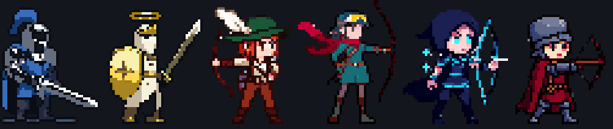
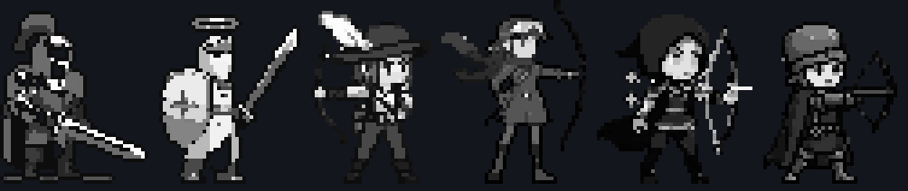
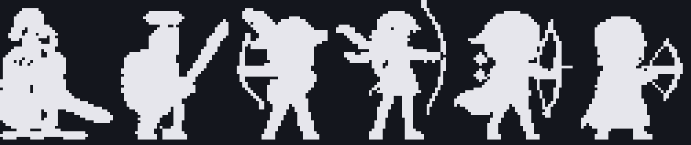
PixelLab 원본 · 정리본(채택) · 손질본 · 점수 (점수는 정리본)
| 직업 | PixelLab 64 | 정리본 ★ | 손질본 | 의도 | 읽힘 | 깔끔 | 명암 | 도트 | 움직임 | 규칙 | 평균 | 판정 | 비평 요약 |
|---|---|---|---|---|---|---|---|---|---|---|---|---|---|
| 레인저 (B5-23) | 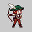 | 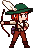 | 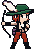 | 3 | 4 | 4 | 3 | 4 | 5 | 4 | 3.86 | pass | 모자+큰 깃털 실루엣 또렷, 상·하체·두 다리 분리. 활 든 팔이 몸 뒤쪽을 향함, 바지 어두움 |
| 저격수 (B5-11) | 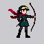 | 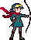 | 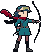 | 4 | 4 | 3 | 3 | 3 | 5 | 4 | 3.71 | pass | (흰 점 지우기 + 안쪽 명도 올림 수리 뒤) 고글·스카프·재킷·벨트·두 다리 읽힘. 스카프·머리 끝 부스러기, 노랑이 고글뿐 |
| 마궁수 (B5-11) | 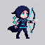 | 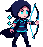 | 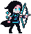 | 4 | 4 | 3 | 3 | 3 | 5 | 4 | 3.71 | pass | 뾰족 후드·망토·마력궁 가장 또렷, 얼굴 귀여움. 하반신 남색이 뭉침 |
| 석궁사수 (B5f-73 좌우 반전) | 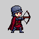 | 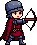 | 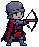 | 4 | 4 | 4 | 3 | 3 | 5 | 4 | 3.86 | pass | (흰 잔여 점 지움) 젊은 얼굴, 해골 느낌 없음, 다리 분리. 붉은 몸통이 어둡게 뭉치고 주황이 빠짐 |
정리본 검수 시트
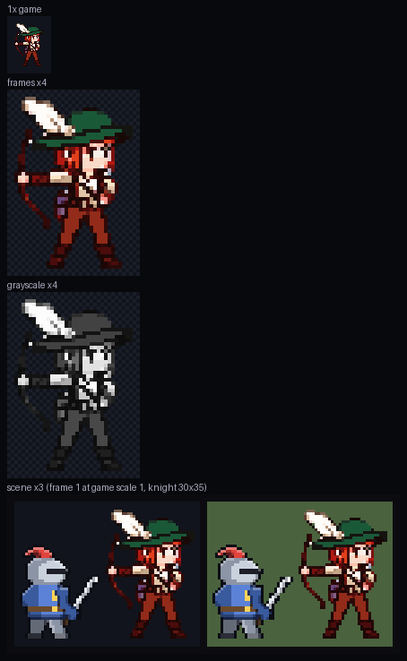
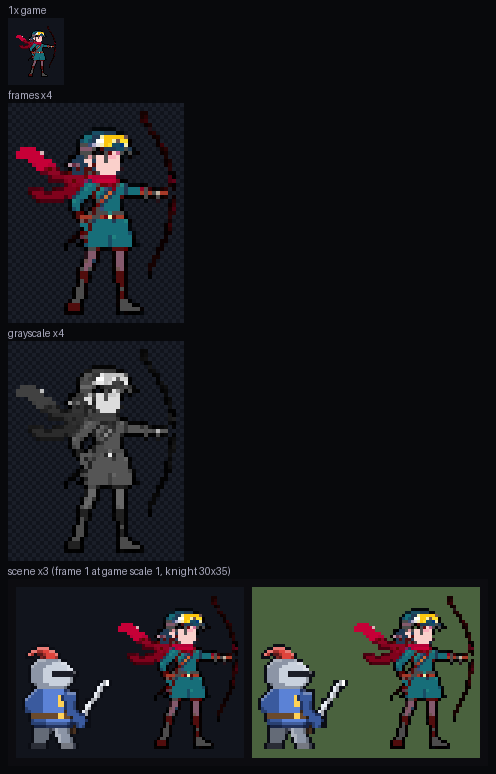
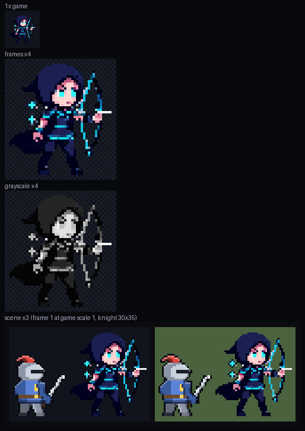
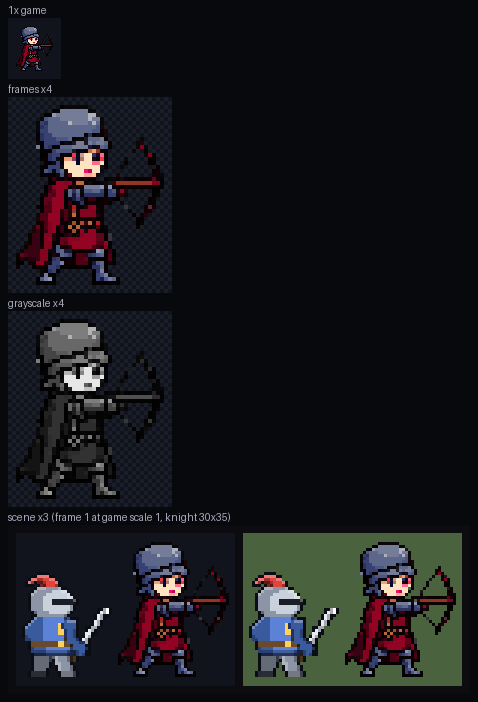
C-1. 관절 애니 계획서 (로드맵 승인 대기)
| # | 직업 | 동작 (관절 시퀀스 A-2) | 엔드포인트·크기 | usage |
|---|---|---|---|---|
| 1~3 | 레인저 | 걷기 · 쏘기(시위 귀까지) · 하늘 45° 쏘기 | animate-with-skeleton-v3 192칸 8프레임 (+ 첫 프레임) | 3 × 3 = 9 |
| 4~6 | 저격수 | 같은 셋 | 9 | |
| 7~9 | 마궁수 | 같은 셋 | 9 | |
| 10~12 | 석궁사수 | 걷기 · 겨눔·반동·재장전 · 하늘 45° 포격 | 9 | |
| 합계 (재시도 0) | 36 → 계열 누적 52 (상한 90) | |||
- 근거: skeleton-v3 192칸 8f = usage 3 이다(검사 계열 성기사 실측,
dev/sheets-sword/usage.md#10). 15f = 4. 텍스트 애니 192칸은 5 라서 쓰지 않는다. - 첫 프레임: 정리본(키 46)을 96칸 발 (48, 88)에 놓고 2배 = 192칸(키 약 92)이다. 관절 시퀀스(
dev/bowsheets/skel.py, 46px·3등신 비율, 발 96·176)와 맞는다. - 무기 지우기: 64칸 정리본에서 1~2칸 두께 선(활대·시위)을 열림 연산으로 지우고 몸에 붙은 덩어리만 남긴다(스크립트, 0회). 석궁 몸체처럼 두꺼워 남는 부분은 덧그리는 무기가 덮는다.
- 무기 덧그리기: 공용
wpn.py를 쓴다(활end='up', 석궁axis_sel, 시위under). 손목 좌표는 관절 시퀀스의 RIGHT/LEFT ARM 이다. 무기 그림은 지금 게임 무기를 1.3배로 쓴다. - 파생 (0회): 대기·전투 대기(첫 프레임 + 숨쉬기), 시전 cast(쏘기 프레임을 pull 값으로), castUp(하늘 쏘기), 피격·사망(코드), 앉기(조립식).
- 실패 수리 (재호출 없음): 몸이 돌아선·팔다리 깨진 프레임은 이웃 프레임 복제나 ComfyUI img2img 낮은 denoise 로 고친다. 결과 프레임은 모두
qa.py --kind char --frames 8와 비평으로 검수하고, 합격분만 보고한다. - 3차(신궁·차원궁사·공성포수)는 2차 기준 그림 편집 + 같은 방식이다. 공성포수 공성 원형 몫(+2)을 포함해 따로 계획서를 낸다.
B5. 컨셉으로 새로 그린 시안 — 검수 통과 대표 (2026-10-17, ComfyUI 16장 · PixelLab 0)
- 사용자 지시 반영
- "기존 비주얼을 따라갈 필요 없이 컨셉에만 알맞게": 지금 스프라이트 밑그림을 버리고 txt2img 로 그렸다(Z-Image + 픽셀 LoRA, 시드 11·23·37·51). 글에는 직업 컨셉만 넣었다(이름·역할·무기·정체 색·상징 소품).
- "궁수는 몸이 왜 이렇게 통짜니": 허리 벨트로 상·하체를 나누고, 무릎 위 짧은 상의 + 바지·부츠로 두 다리를 따로 보이게 했다. 소매·팔뚝 보호대로 팔을 떼고, 망토·자락은 뒤로 짧게, 날렵한 체형으로 했다.
- 앞선 지적: 뭉개짐 금지, 노인·실사 비율 금지. 검사 계열 B 시안과 같은 3등신·큰 머리·젊은 얼굴·밝은 색이다.
- 축소: 활·깃털을 뺀 몸 키(머리 꼭대기~발바닥)를 46칸으로 맞춘다. 아주 어둡고 채도 낮은 잉크색만 외곽선으로 잡고(남색·짙은 초록 옷은 지킴), 칸마다 최빈색을 쓰고 14색으로 줄이고, 발밑 그림자를 지운다. 도구는
dev/bowsheets/design.pyshrink2. - 검수 (
docs/specs/pixel-qa.md): 16장 모두dev/pixel-qa/qa.py검수 시트(1배·4배·흑백·견습 기사 옆 장면)와 지표를 만들었다. 그다음critic.md지침 비평 서브에이전트(직업마다 1명)가 7항목을 채점했다. 합격선은 전 항목 3+ 이고 평균 3.5 다. 캐릭터 시트는 게임에서 그대로 그리므로, 검수의 "게임 모습 만들기"(VFX 로더)는 원본 그대로로 바꿔 넣었다(dev/bowsheets/qa_run.py). - 대표 ★ (모두 합격): 레인저 23 (평균 4.00) · 저격수 11 (3.71) · 마궁수 11 (3.86) · 석궁사수 37 (3.86).
- 남은 지적 (합격이지만 비평이 적은 것):
- 저격수: 노란 고글이 빠졌고 활이 어둡다.
- 마궁수: 발밑 분홍 막대, 후드 끝이 덜 뾰족하다.
- 석궁사수: 얼굴이 어둡다(붉은 눈), 갑옷 톤이 무겁다.
대표 4종 — 검사 계열 B 시안(맨 앞 검사·성기사)과 나란히 (컬러 · 흑백 · 실루엣, 3배)
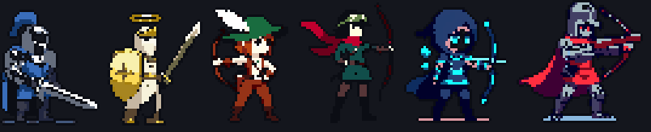
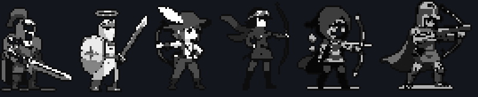
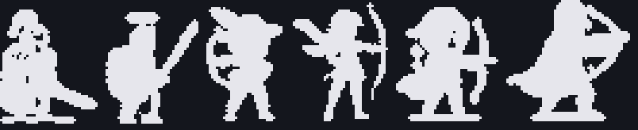
실루엣 틈 (다리 = 아래 30% 줄 중 두 다리가 갈린 줄 비율, 팔 = 몸통 높이 줄 중 팔이 떨어진 줄 비율): 대표 레인저 0.79/0.74 · 저격수 1.0/0.9 · 마궁수 0.86/0.95 · 석궁사수 0.53/0.48. 비교로 검사 0.43/0.53, 성기사 0.79/0.68 이다(무기 칸이 섞인 대략값).
지금(35px) vs 새 대표(46px) — 같은 땅·같은 배율
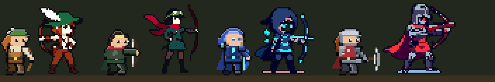
대표 검수 시트 (1배 · 4배 · 흑백 · 견습 기사 옆 장면)
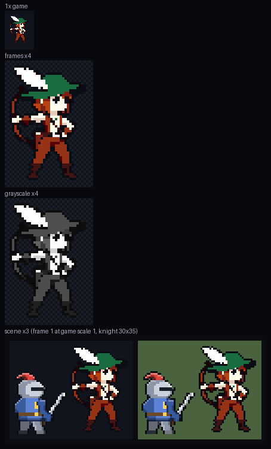
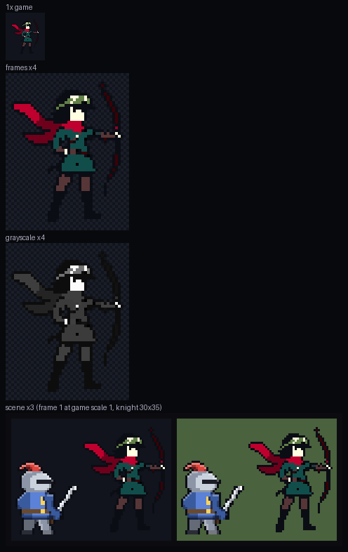
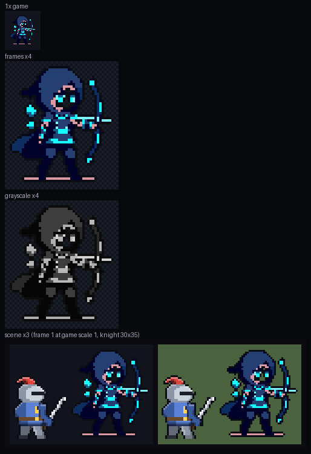
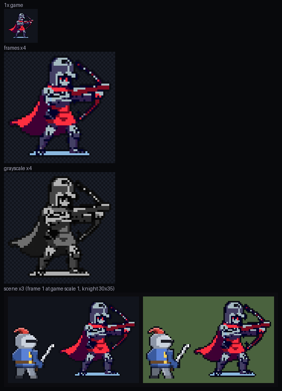
검수 점수 — 16장 전부 (항목 1~5, 합격선 전 항목 3+ · 평균 3.5)
| 후보 | 46px | 의도 | 읽힘 | 깔끔 | 명암 | 도트 | 움직임 | 규칙 | 평균 | 판정 | 틈 다리/팔 | 비평 요약 |
|---|---|---|---|---|---|---|---|---|---|---|---|---|
| 레인저 11 | 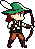 | 4 | 4 | 3 | 3 | 3 | 5 | 4 | 3.71 | pass | 1.0 / 0.84 | 모자·깃털·적갈 머리·벨트·두 다리 읽힘. 가슴 도트 조금 지글거림 |
| 레인저 23 ★ | 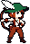 | 4 | 4 | 4 | 3 | 4 | 5 | 4 | 4.00 | pass | 0.79 / 0.74 | 외곽선·덩어리 가장 깔끔, 통짜·뭉개짐·노인 얼굴 모두 피함. 바지가 조금 어두움 |
| 레인저 37 | 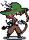 | 3 | 2 | 2 | 2 | 2 | 5 | 3 | 2.71 | regen | 0.79 / 0.8 | 얼굴·깃털 안 읽힘, 부스러기, 어두운 상체 |
| 레인저 51 | 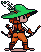 | 2 | 3 | 2 | 3 | 3 | 5 | 3 | 3.00 | regen | 0.67 / 0.52 | 흰 깃털·크림 셔츠 없음, 주황 일색, 잡선 |
| 저격수 11 ★ | 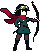 | 3 | 3 | 4 | 3 | 4 | 5 | 4 | 3.71 | pass | 1.0 / 0.9 | 3등신에 젊은 얼굴·밝음, 벨트·두 다리·내민 팔로 통짜 해결. 노란 고글 없음·활이 어두움은 아쉬움 |
| 저격수 23 | 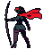 | 2 | 2 | 4 | 2 | 3 | 5 | 4 | 3.14 | regen | 1.0 / 0.95 | 왼쪽을 봄, 몸 전체 어두운 덩어리 |
| 저격수 37 | 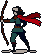 | 2 | 3 | 3 | 3 | 3 | 5 | 4 | 3.29 | regen | 0.88 / 0.86 | 실사 비율(머리 1/5), 왼쪽을 봄, 바닥 그림자 |
| 저격수 51 | 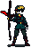 | 2 | 2 | 3 | 2 | 3 | 5 | 4 | 3.00 | regen | 0.87 / 0.71 | 얼굴이 가려짐, 어둡게 뭉개짐 (lrange 경보 동의) |
| 마궁수 11 ★ | 4 | 4 | 3 | 3 | 4 | 5 | 4 | 3.86 | pass | 0.86 / 0.95 | 오른쪽 3등신 젊은 얼굴·하늘색 눈·룬, 벨트·다리 틈. 발밑 분홍 막대, 후드 끝 약함 | |
| 마궁수 23 | 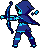 | 2 | 3 | 3 | 3 | 3 | 5 | 4 | 3.29 | regen | 1.0 / 0.84 | 왼쪽 사격 자세, 실사 비율, 얼굴 가림 |
| 마궁수 37 | 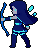 | 1 | 3 | 4 | 2 | 3 | 5 | 4 | 3.14 | regen | 1.0 / 0.84 | 후드 없음, 왼쪽, 어두운 덩어리 |
| 마궁수 51 | 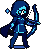 | 3 | 3 | 3 | 3 | 3 | 5 | 4 | 3.43 | fix | 0.71 / 0.74 | 얼굴이 어두운 가면, 몸 어두움 |
| 석궁사수 11 | 2 | 3 | 2 | 2 | 2 | 5 | 4 | 2.86 | regen | 0.71 / 0.58 | 통 투구에 얼굴 없음, 무기가 총처럼, 상체 어두운 덩어리 | |
| 석궁사수 23 | 3 | 3 | 3 | 3 | 3 | 5 | 4 | 3.43 | fix | 0.5 / 0.37 | 젊은 얼굴·밝음은 가장 가깝지만 투구·석궁 특징 약함, 망토가 하체와 뭉침 | |
| 석궁사수 37 ★ | 3 | 4 | 4 | 3 | 4 | 5 | 4 | 3.86 | pass | 0.53 / 0.48 | 상하체 분리·팔다리 틈·석궁 형태·깔끔한 도트. 얼굴이 어둡고(붉은 눈) 갑옷 톤이 무거움 | |
| 석궁사수 51 | 2 | 2 | 3 | 2 | 3 | 5 | 4 | 3.00 | regen | 0.64 / 0.42 | 정면 구도, 어두운 덩어리, 무기가 막대 |
ComfyUI 원본 1024 (16장)
B. 디자인 시안 — 그림체 B(3등신) · 키 46px (2026-10-16, ComfyUI 16장 · PixelLab 0)
- 만든 법: 검사 계열 ▣ 과 같다. 지금 대기 그림의 머리는 두고 목 아래만 1.5배로 늘린 밑그림을 쓴다. 이걸 ComfyUI Z-Image + 픽셀 LoRA 로 다시 그린다(denoise 0.82, 시드 11·23·37·51). 그다음 같은
shrink로 키 46px 로 줄인다. 프롬프트는 A-1 디자인 브리프다. 도구dev/bowsheets/design.py·design_page.py. - 대상: 2차 3종(저격수·마궁수·석궁사수) + 1차 레인저. 3차는 2차 기준 그림이 정해지면 그 위에 특징을 더한다.
- ★ = 대표로 고른 것 (옆모습이 분명하고 브리프에 가까운 것): 레인저 23 · 저격수 51 · 마궁수 23 · 석궁사수 51. 다른 시드가 좋으면 알려 주면 바꾼다.
- 한계:
- 석궁사수 후보는 석궁을 총처럼(활대 없이) 그렸다. 무기는 어차피 원래 무기 그림을 손목에 덧그리니 몸만 보고 골랐다.
- 마궁수 후드 끝이 뒤로 뾰족하게 꺾이지 않았다. 차원궁사 뿔 후드와 구분하려면 PixelLab 정리 때 고친다.
- 몇 장은 정면에 가깝다(레인저 11·51, 마궁수 37·51).
지금(35px) 과 새 시안(46px) — 같은 땅, 같은 배율 (직업마다 왼쪽 = 지금, 오른쪽 = 새 시안 ★)
대표 4종 — 컬러 · 흑백 · 실루엣 (레인저 · 저격수 · 마궁수 · 석궁사수)
실루엣: 챙 모자 / 긴 코트+긴 장궁 / 큰 후드 망토 / 각진 투구+수평 무기 — 같은 계열 넷이 흑백·실루엣으로 갈린다.
레인저 (1차)
ComfyUI 원본 1024 후보 4장
저격수 (2차)
ComfyUI 원본 1024 후보 4장
마궁수 (2차)
ComfyUI 원본 1024 후보 4장
석궁사수 (2차)
ComfyUI 원본 1024 후보 4장
A. 새 방향 (2026-10-16) — 디자인 새로 그리기 + 관절 지정 애니 · 0회 준비
A-1. 디자인 브리프 (7종)
| 직업 | 정체 색 (fx) | 실루엣 한 줄 | 머리 | 옷 | 상징 소품 · 무기 | 이어 갈 특징 / 3차에서 |
|---|---|---|---|---|---|---|
| 레인저 (1차) | 숲 초록 #7fd06a | 넓은 챙 모자 + 뒤로 꽂힌 큰 깃털 | 적갈색 머리, 챙 모자(깃털 하나) | 흰 셔츠·가죽 조끼, 짧은 반바지 망토 없음 | 허리 화살통, 짧은 활(장궁의 3/4) | 2차 셋의 공통 뿌리 — 깃털·가죽은 셋에 조금씩 남긴다 |
| 저격수 (2차) | 황금 노랑 #e8e070 + 짙은 초록 | 세로로 긴 장궁 + 갈라진 긴 코트 자락 + 휘날리는 스카프 꼬리 | 검은 묶은 머리, 이마에 고글(노란 렌즈) | 깃 세운 긴 코트(허리 아래로 두 갈래), 가슴 보호대 | 키보다 큰 장궁, 붉은 스카프 | → 신궁: 고글 → 황금 관(빛살), 코트 → 흰·금 전포, 머리 뒤 태양 원반, 양 끝 날개 장식 태양궁 |
| 신궁 (3차) | 태양 금 #ffe066 | 원반 후광 + 날개 달린 활 + 흰 전포 | 백금발, 빛살 관 | 흰·금 전포, 가죽 흉대, 금빛 망토 | 태양 원반(등 뒤, 몸 따라감), 태양궁 | 저격수의 긴 활·코트 선을 잇는다 |
| 마궁수 (2차) | 마력 하늘 #6ff3ff + 남색 | 끝이 뒤로 뾰족한 깊은 후드 + 어깨 망토 | 후드 속 파란 눈빛 | 남색 로브형 상의, 어깨 망토 | 빛나는 시위의 마력궁, 몸 옆에 떠 있는 룬 조각 2개 | → 차원궁사: 후드에 뿔 두 갈래, 등 뒤 끊긴 차원 고리, 망토 끝이 조각나 떠다님, 초승달 날 활 |
| 차원궁사 (3차) | 차원 자홍 #ff4dff + 보라 | 뿔 후드 + 등 고리 + 초승달 활 | 뿔 후드, 자홍 눈빛 | 짙은 보라 로브, 찢어진 망토 | 차원 고리(끊긴 원), 초승달 날 활 | 마궁수의 후드·떠 있는 소품을 잇는다 |
| 석궁사수 (2차) | 주황 #ffb86b + 쇠·붉은 전포 | 각진 투구 + 허리 높이로 앞에 길게 뻗은 거대 석궁 | 면갑을 올린 투구 | 흉갑, 붉은 전포, 허리 살 탄띠 | 거대 석궁(몸체가 몸통 길이) | → 공성포수: 어깨 거치 공성 석궁(활대 폭 2배, 감는 윈치), 큰 견갑, 등에 살 묶음 통, 붉은 눈 렌즈, 넓게 벌린 자세 |
| 공성포수 (3차) | 짙은 주황 #ffb86b + 검은 쇠 | 어깨 위 거대 석궁 + 큰 견갑 + 등짐 (128 칸) | 닫힌 투구, 붉은 렌즈 | 두꺼운 판갑, 검붉은 전포 | 공성 석궁, 살 묶음 통 | 석궁사수의 투구·전포를 잇는다 |
- 같은 계열 실루엣 구분: 챙 모자 / 긴 장궁+코트 자락 / 뾰족 후드 / 각진 투구+수평 석궁. 3차는 2차 틀 위에 원반·고리·견갑을 더한다(앞서 정한 틀 바꾸기 안 그대로).
- 그림체·키(지금 약 35px → 1.3~1.5배 여부)는 검사 계열 시안이 승인되면 그 기준을 따른다.
A-2. 동작별 관절 시퀀스 (막대 인형)
skel.py 와 같다. 192칸, 발 (96, 176), 관절 18개 라벨·z 순서다. 레인저 계열 dev/bowsheets/skel.py 는 좌표를 손으로 찍지 않고 각도로 자세를 정해 계산한다(과장해도 팔다리 길이가 그대로).
- 팔 역할
- 활: 파랑 LEFT = 활 든 팔(먼 쪽, 과녁으로 뻗음), 빨강 RIGHT = 시위 당기는 손(가까운 쪽).
- 석궁·공성: RIGHT = 뒷손(개머리·방아쇠), LEFT = 앞손(받침).
- 몸 비틀기
turn: 활을 당길 때 활 든 어깨는 앞으로, 당기는 어깨는 뒤로 돈다(궁수 옆모습). 이게 없으면 활이 가슴에 겹친다. - 과장 정도 (대기 대비 최대 이동, 192칸): 활 쏘기 당기는 손 36 · 활 손 23, 하늘 쏘기 35·30 (목 14), 석궁 쏘기 22·18 (목 12), 공성 쏘기 20·17 (목 16, 반 걸음 밀림), 공성 하늘 쏘기는 뒷무릎을 꿇는다. 지난 PixelLab 텍스트 애니의 활 쏘기 손 이동은 약 8(192칸 환산)이었다.
- 노란 선 = 무기 덧그리기 계획(아래 A-3), 회색 = 첫 프레임 자세.
A-3. 활·석궁 덧그리기 계획 (관절이 없는 부분)
| 무기 | 위치·각도 (관절에서 계산) | 시위 |
|---|---|---|
| 활 (단궁·장궁·마력궁·태양궁·초승달 활) | 활 든 손(LEFT ARM) 가운데에 세로 활대. 당길 때는 화살 방향 = 당기는 손 → 활 손이고, 활대는 그에 수직이다. 쉴 때는 활 든 팔의 아래팔 방향을 따른다. 그림은 직업 무기 그림을 공용 wpn.py 로 돌려 얹는다(end='up'). | 당기는 프레임: 활 양 끝 → 당기는 손(RIGHT ARM) 의 V 자. 쉴 때·놓은 뒤: 양 끝을 잇는 직선 (공용 overlay(under=)) |
| 석궁 (거대 석궁) | 뒷손(RIGHT ARM)을 손잡이로, 프레임 메모의 각도(deg)로 몸체를 얹고 앞 끝에 가로 활대. 재장전 프레임은 앞손(LEFT ARM)이 쥐고 코를 땅으로(grip: L). | 평소 양 끝 직선. 재장전 6번은 양 끝 → 뒷손으로 끌어올리는 V |
| 공성 석궁 | 뒷손을 어깨 위 개머리로, 몸체 1.3배(활대 폭 2배)를 deg 각도로. 반동 프레임은 −25~−30° 로 튐 | 양 끝 직선 |
- 관절 시퀀스·무기 메모:
dev/bowsheets/skel/<동작>.json(요청 본문의first_frame는 새 디자인 승인 뒤 붙인다). - 예상 PixelLab (계획서는 디자인 승인 뒤 따로): 동작 8f = 3. 직업마다 새 디자인이라 직업당 걷기·평타 A·평타 B 3개 = 9, 7종 63. 3차를 2차 동작에 편집으로 입히면 2차 4종 + 1차 1종 = 45 안팎.
0. 결과 — 7종 시트 (PixelLab usage 12, 2026-10-16)
src/sprites/<직업>.png/.json 7장을 만들었다(칸 96, 공성포수 128).
SHEET_ON 은 꺼 둔 채다. 켤지는 사용자가 정한다. 시험할 때는 주소에 ?sheetsOn=직업,… 를 붙인다(공용 한 줄).
- 줄: 대기 4 · 전투 대기 4 · 걷기 8(공성 4) · 평타 A 8(석궁 4) · 평타 B · 시전(pull 값으로 프레임 고름) · 하늘 시전 castUp · 피격 2 · 사망 5. 앉기는 예전 조립식이다(공용 규칙).
- 수리 (재호출 없이):
- 활 쏘기에서 PixelLab 이 가는 활대를 지운 프레임은 이웃 프레임의 손→활 관계로 덧그렸다.
- 활 시위는 코드로 그린다(당김 1→3→5→8→8→놓음).
- 석궁은 투구 회색이 쇠 회색과 섞여서, 손 앞의 가장 큰 덩어리로만 각도를 잰다.
- 걷기 중 각도가 튄 프레임은 이웃 값으로 메웠다.
- 아쉬운 점:
- 활 쏘기 동작에서 몸 움직임이 작다(PixelLab 이 앞팔만 조금 움직였다). 당김은 코드 시위가 보여 준다.
- 활 하늘 쏘기는 45° 겨눔이 아니라 활을 머리 위로 세워 드는 동작으로 나왔다.
- 공성포수 쏘기 후반에 팔 쪽 붉은 찌꺼기가 조금 있다.
index.html?server=http://127.0.0.1:9&sheetsOn=ranger,marksman,arcaneArcher,arbalest,deadeye,voidArcher,siegeMaster (콘솔 S.cls='marksman'; depart())7종 대기 한 줄 — 지금 원본 vs 시트 (흑백·실루엣 탭은 위 2-2 절과 같다)
시트 실루엣 겹침: 가장 높은 짝 레인저–저격수 0.84 (0.85 이상 없음). 2→3차: 마궁수–차원궁사 0.74 · 저격수–신궁 0.74 · 석궁사수–공성포수 0.83.
동작별 프레임 몽타주 (7종)
0-1. 덧그리기 전 PixelLab 원본 — 몸·팔이 실제로 움직였나 (2026-10-16 로드맵 검수 요청)
| 원형/동작 | 눈으로 본 움직임 | 판정 |
|---|---|---|
| 활 / shoot 8f | 뒷손으로 시위를 당기는 동작이 없다. 앞팔을 내밀고 조금 드는 정도(손 이동 최대 약 4도트), 활대도 지워짐 | 미달 |
| 활 / shootUp 4f | 팔을 머리 위로 크게 올림(움직임은 큼) — 활 당기기는 없음, 활을 칼처럼 치켜듦 | 동작 다름 |
| 석궁 / shoot 4f | 거의 정지 (겨눈 자세 그대로, 손 1~2칸) | 미달 |
| 석궁 / shootUp 4f | 팔을 들어 올림 (석궁은 2장에서 사라짐) | 약함 |
| 공성 / shoot 8f | 윗몸이 젖혀지고 팔이 올라가는 반동이 보임 | 보통 |
| 걷기 3종 | 다리 교차·몸 들썩임 분명 | 좋음 |
아래 숫자 "body %" 는 첫 프레임과 다른 몸 칸 비율이다. 그런데 PixelLab 은 가만히 있는 프레임도 다시 그려서 15~25% 는 잡음이다. "hand" 는 손(금색) 가운데 이동 도트다. 판단은 그림으로 한다. 수치는 dev/review/sheets-bow/motion.json(dev/bowsheets/motion.py).
1. 칸 크기와 발 기준점
| 직업 | 무기 | 칸 | 발 기준점 (x, y) | 지금 리그 최대 범위 (발 기준, 도트) | 여백 |
|---|---|---|---|---|---|
| 레인저 | 단궁 | 96×96 | (42, 86) | x −16 ~ +22 · y −35 ~ +1 | 사방 20칸 이상 |
| 저격수 | 장궁 | 96×96 | (42, 86) | x −19 ~ +24 · y −35 ~ +1 | 사방 20칸 이상 |
| 마궁수 | 마력궁 | 96×96 | (42, 86) | x −18 ~ +23 · y −38 ~ +1 | 사방 20칸 이상 |
| 석궁사수 | 거대 석궁 | 96×96 | (42, 86) | x −20 ~ +29 · y −34 ~ +2 | 앞 25칸 |
| 신궁 | 태양궁 | 96×96 | (42, 86) | x −19 ~ +25 · y −35 ~ +1 | 사방 20칸 이상 |
| 차원궁사 | 차원궁 | 96×96 | (42, 86) | x −18 ~ +23 · y −39 ~ +1 | 사방 20칸 이상 |
| 공성포수 | 공성 석궁 | 128×128 | (58, 116) | x −21 ~ +30 · y −34 ~ +2 | 앞 40칸 |
측정: 기사 리그를 1도트 = 1px 로 그려 불투명 범위를 쟀다 — 대기·전투 대기·앉기·걷기 8프레임·평타 4종 전 구간(0.05 간격)·시전(pull 0/6/13 × bowA 0 ~ −1.4). 발 기준점은 기준 그림을 찍은 원점과 같아서, 시트를 켜도 서는 자리·그림자가 예전과 같다. 지금 리그로는 공성포수도 96 칸에 들어간다(앞 30칸). 128 은 PixelLab 애니가 석궁을 더 크게 그릴 때를 대비한 여유다 — 정할 것 ①.
SHEET_ON 을 켜서 그린 것. 불투명 픽셀 겹침 저격수 95% · 공성포수 92%(숨쉬기·리그 이음새 차이), 좌우 반전도 같다.

2. 기준 그림 (지금 게임 그대로, 칸·발 기준점 표시)
빨간 줄 = 발 기준점(땅). 회색 테두리 = 칸 끝. 흑백·실루엣은 같은 계열 구분 확인용이다(2차: 깃털 모자 / 고글·코트 / 후드·망토 / 투구·석궁, 3차는 2차 특징을 잇는다).
2-2. 원형 마네킹 + 직업 입히기 시안 (PixelLab 0회)
- 머리(모자·후드·관)는 직업 그림에서 통째로 옮긴다.
- 몸통 무늬·망토는 몸이 움직인 만큼 옮긴다.
- 바지·장화·손·무기는 직업 램프로 칠한다. 무기는 재질 밝기 단(나무·쇠·시위)으로 옮긴다.
- 마지막에 직업 팔레트로 고정하고 외곽선을 정리한다.
- 원형 3종: 활 = 저격수 몸 + 장궁 (레인저·저격수·마궁수·신궁·차원궁사) · 석궁 = 석궁사수 몸 + 거대 석궁 (석궁사수) · 공성 = 석궁사수 몸 + 공성 석궁, 128 칸 (공성포수).
- 검사 계열은 검사 몸을 빌렸다. 활은 쥔 손·팔 자세가 직업 손도트를 따라가서, 같은 계열 몸을 빌렸다. 검사 몸에 활을 쥐이면 활이 옆으로 내려간다.
마네킹 (위부터 활 · 석궁 · 공성)
- 무기 덧그리기 — 공용
dev/sheets-common/wpn.py를 그대로 쓴다.- 직업 무기 그림: 같은 자세에서 무기 색(활대·석궁 몸체·쇠)만
#ff00ff로 바꿔 찍은 그림과 원본이 다른 칸 (WeaponSprite.from_capture). 빛 색은 그대로 둬서 시위가 빠진다. - 프레임:
grip_tip(마네킹 활대 칸, 손 칸) →overlay(손은 무기 위front, 시위는under). - 레인저는 자기 짧은 활(장궁의 0.73배)이 얹혀서, "활 0.75배" 안이 코드 추가 없이 된다.
end='up': 활은 가운데를 쥔다. 그래서 손 점 = 축 가운데, 끝 = 위 끝으로 둔다. 기본값(손에서 먼 끝)이면 양 끝이 대칭이라 180° 뒤집힌다. 또 하늘 겨눔·걷기에서 손이 한쪽 끝에 붙으면 손 점과 끝 점이 겹쳐 활이 가로로 눕는다.axis_sel: 석궁은 T자(몸체+활대)다. 전체 주축은 개머리가 손에 가리는 정도에 따라 90° 바뀐다. 그래서 쇠 활대 칸으로만 각도를 잰다(프레임 쪽도 쇠 단만).under: 시위는 당김에 따라 모양이 바뀌어 무기와 같이 돌릴 수 없다. 마네킹 시위 칸을 직업 시위색으로, 무기를 얹기 전에 그린다.
tidy)가 외곽선으로 바꾸므로, 덧그린 무기 칸은 정리 뒤에 원래 색으로 되돌린다. - 직업 무기 그림: 같은 자세에서 무기 색(활대·석궁 몸체·쇠)만
- 틀 바꾸기: 직업 소품을 머리·몸 이동을 따라 옮긴다.
- 차원궁사: 후드 위 뿔 두 갈래, 등 뒤 끊긴 차원 고리, 초승달 날 활
- 신궁: 머리 뒤 태양 원반
- 공성포수: 앞 어깨 큰 견갑, 어깨 높이로 올린 1.2배 공성 석궁
- 몸 색: 부위 램프를 빈도 분위수(15·45·75%)로 고른다. 드문 밝은 장식선(차원궁사 분홍)이 넓은 면을 칠하지 않게 하려는 것이다.
입히기 v2 (맨 왼쪽 = 지금 게임 원본, 그 오른쪽 6칸 = 마네킹 프레임에 입힌 것: 대기 · 시위 반 · 시위 끝 · 하늘 겨눔 · 걷기 2)
첫 시안 v1 (무기도 마네킹 모양, 틀 바꾸기 전) 보기
7종 한 줄 — 원본 · v1 · v2 (대기)
실루엣 겹침 (발 기준점을 맞춘 불투명 영역 IoU, 1 = 똑같음). 0.90 이상 0.85 이상 같은 계열 2→3차 짝
| 레인저 | 저격수 | 마궁수 | 석궁사수 | 신궁 | 차원궁사 | 공성포수 | |
|---|---|---|---|---|---|---|---|
| 레인저 | — | 0.68 | 0.74 | 0.78 | 0.71 | 0.73 | 0.77 |
| 저격수 | 0.68 | — | 0.63 | 0.67 | 0.78 | 0.62 | 0.66 |
| 마궁수 | 0.74 | 0.63 | — | 0.75 | 0.71 | 0.94 | 0.75 |
| 석궁사수 | 0.78 | 0.67 | 0.75 | — | 0.72 | 0.73 | 0.91 |
| 신궁 | 0.71 | 0.78 | 0.71 | 0.72 | — | 0.69 | 0.71 |
| 차원궁사 | 0.73 | 0.62 | 0.94 | 0.73 | 0.69 | — | 0.72 |
| 공성포수 | 0.77 | 0.66 | 0.75 | 0.91 | 0.71 | 0.72 | — |
| 레인저 | 저격수 | 마궁수 | 석궁사수 | 신궁 | 차원궁사 | 공성포수 | |
|---|---|---|---|---|---|---|---|
| 레인저 | — | 0.83 | 0.85 | 0.64 | 0.87 | 0.84 | 0.62 |
| 저격수 | 0.83 | — | 0.81 | 0.64 | 0.87 | 0.89 | 0.63 |
| 마궁수 | 0.85 | 0.81 | — | 0.70 | 0.89 | 0.89 | 0.68 |
| 석궁사수 | 0.64 | 0.64 | 0.70 | — | 0.66 | 0.70 | 0.92 |
| 신궁 | 0.87 | 0.87 | 0.89 | 0.66 | — | 0.86 | 0.65 |
| 차원궁사 | 0.84 | 0.89 | 0.89 | 0.70 | 0.86 | — | 0.68 |
| 공성포수 | 0.62 | 0.63 | 0.68 | 0.92 | 0.65 | 0.68 | — |
| 레인저 | 저격수 | 마궁수 | 석궁사수 | 신궁 | 차원궁사 | 공성포수 | |
|---|---|---|---|---|---|---|---|
| 레인저 | — | 0.84 | 0.81 | 0.66 | 0.73 | 0.66 | 0.64 |
| 저격수 | 0.84 | — | 0.81 | 0.64 | 0.74 | 0.66 | 0.63 |
| 마궁수 | 0.81 | 0.81 | — | 0.73 | 0.81 | 0.72 | 0.71 |
| 석궁사수 | 0.66 | 0.64 | 0.73 | — | 0.63 | 0.60 | 0.85 |
| 신궁 | 0.73 | 0.74 | 0.81 | 0.63 | — | 0.70 | 0.62 |
| 차원궁사 | 0.66 | 0.66 | 0.72 | 0.60 | 0.70 | — | 0.61 |
| 공성포수 | 0.64 | 0.63 | 0.71 | 0.85 | 0.62 | 0.61 | — |
- 원본: 2→3차 두 짝이 이미 닮았다. 마궁수–차원궁사 0.94, 석궁사수–공성포수 0.91.
- v1: 무기까지 원형 하나라서 다 비슷해진다 (0.86~0.92).
- v2: 0.85 이상인 칸이 없다(가장 높은 것이 석궁사수–공성포수 0.847). 2→3차 짝은 마궁수–차원궁사 0.72, 저격수–신궁 0.74, 석궁사수–공성포수 0.85 다(표의 테두리 칸). 공성포수의 실제 어깨 거치 자세는 공성 원형 애니(+2회)가 만들므로 그때 더 벌어진다.
- 남은 가까운 짝은 레인저–저격수·마궁수–신궁 정도이고, 서로 다른 갈래라 머리(깃털 모자 / 고글 / 후드 / 관+원반)로 구분된다.
3. 동작 키 매핑 (게임 상태 → 시트 줄)
| 줄 | 게임에서 언제 | 프레임 고르는 법 (src/sprites.js sheetFrame) | 만드는 법 (계획 — 승인 전) |
|---|---|---|---|
idle | 캠프·마을 서 있기 (mode stand/idle) | fps 반복 | 기준 그림 + 숨쉬기 (PixelLab 없이) |
guard | 교전 중 평타 사이 | fps 반복 | idle 재사용, 무게중심 1칸 낮춤 |
walk | 원정 이동·결투 접근 | walkT × fps | PixelLab 애니 (체형 A 활 / B 석궁 공유) |
atkA · atkB | 평타 (knight.combo 홀짝) | hit 프레임이 원거리 타격 시점 45% 에 오게 | 시위 당김→발사→복귀 / 하늘 겨눠 쏘기 |
cast | 스킬 자세 (pose.pull, bowA > −0.55) | key: "pull", val 이 가장 가까운 프레임 (예 [0, 4, 8, 12]) | atkA 의 시위 당김 프레임 재사용 |
castUp (새) | 하늘로 겨눈 스킬 (화살비·태양 화살·포격, bowA ≤ −0.55) | 같은 규칙 | atkB(하늘 겨누기) 프레임 재사용 |
hurt | 맞아서 밀림 (recoil > 0.35) | recoil 크기로 0/1 | idle 1장 + 코드 반동·흰 번쩍임 |
death | 체력 0 (down) | 한 번, 마지막 유지 | hurt 1장 + 코드 넘어짐 |
sit | 마을·캠프 앉기 | fps 2 반복 | 기존 앉기 유지 또는 idle 하반신 ComfyUI |
- 몸 이동·띄움·기울임(dx·lift·skew·sx·sy)은 지금처럼 시트 그림 전체에 변형으로 준다 (석궁사수 강철 폭풍의 석궁 회전 bowA 0 ~ −4π 는 가장 가까운 줄로만 — 회전 그림은 없다).
- 화살이 나가는 자리: 시트의
hand점(앞쪽 끝 = 활·석궁 끝)을heroMuzzle이 쓴다. 석궁사수 스킬의abMuzzle은 리그 셈이라 시트를 켠 뒤 위치를 다시 맞춘다. - 스킬 잔상
onlyWeapon은 시트에선 아무것도 안 그린다 (무기가 그림 안에 있음 — 파이터와 같음).
4. PixelLab 사용 (로드맵 승인 8개, 상한 12)
| # | 원형/동작 | 프레임 | usage | 결과 |
|---|---|---|---|---|
| 1 | 활 / walk | 8 | 2 | 부위색 유지, 다리 교차 좋음 |
| 2 | 활 / shoot | 8 | 2 | 가는 활대를 지움 · 몸 움직임 작음 → 활 덧그리기·시위 코드로 수리 |
| 3 | 활 / shootUp | 4 | 1 | 첫 프레임 활대를 1칸 굵게(0회) 넣어 활 유지 · 45° 대신 머리 위로 세움 |
| 4 | 석궁 / walk | 8 | 2 | 좋음 (마지막 1장 석궁 빠짐 → 이웃으로) |
| 5 | 석궁 / shoot | 4 | 1 | 움직임 작음 → 평타 B 는 반동 1칸 코드 |
| 6 | 석궁 / shootUp | 4 | 1 | 2장 석궁 빠짐(팔은 올림) → 올린 손에 45° 위로 덧그림 |
| 7 | 공성 / walk | 4 | 1 | 어깨 거치 무게감 걷기 |
| 8 | 공성 / shoot | 8 | 2 | 큰 반동으로 석궁이 들림 · 후반 팔 찌꺼기 약간 |
| 합계 | 12 | 재시도 0 · 기록 dev/bowsheets/usage.md · 계정 잔량 1,171 (바닥 300 위) | ||
5. 확인 링크 (조립식 — 시트를 켜려면 주소에 &sheetsOn=직업)
레인저 평타 · 저격수 평타 · 마궁수 평타 · 석궁사수 평타 · 신궁 평타 · 차원궁사 평타 · 공성포수 평타
6. 수용 기준
| 기준 | 상태 |
|---|---|
| 계열 7종이 시트로 그려지고 대기·걷기·평타 2종·시전·피격·사망이 움직인다 (앉기는 공용 규칙으로 조립식) | ✅ 7종 9줄 (0절 재생), 스킬 시험장·오프라인 원정에서 시트로 그려짐 |
| 어떤 동작에서도 무기 끝이 칸에서 잘리지 않는다 | ✅ 7종 전 프레임 칸 가장자리 닿음 0 (sheet.py 검사) |
| 기존 그림과 그림체가 이어지고 2차·3차가 흑백 실루엣으로 구분된다 | ✅ 머리·몸통 무늬·망토는 원본에서 옮김, 무기는 원래 무기 그림. 실루엣 겹침 최대 0.84, 2→3차 0.74·0.74·0.83 |
| 스킬 시전·궁극기·결투·레이드·마을 화면이 깨지지 않는다, 전 직업 시전 예외 0 | ✅ 7종 스킬 23개 × 숙련 0~3단 = 88번 시전 예외 0 (스킬 시험장, 시트 켬). 마을 앉기는 조립식 |
SHEET_ON 을 끄면 예전 조립식 | ✅ 커밋은 7종 모두 false. ?sheetsOn= 으로만 켜짐, ?sheets=0 으로 끔 |
| fps 가 떨어지지 않는다 (4인) | ✅ 4명 × 300번 그리기: 조립식 922ms → 시트 12ms |
| PixelLab 사용량·ComfyUI 사용 기록 | ✅ usage 12 (4절), ComfyUI 0장 |